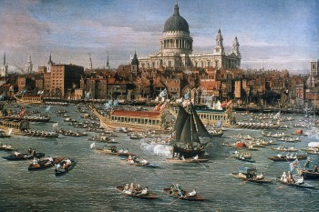
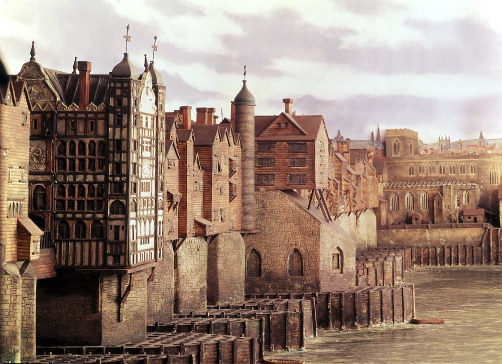

ISTORIA LONDREI
La origini Londra a fost o așezare celtă. În 43 d.Hr. romanii au fondat orașul Londinium, iar numele acestuia se pare că a dat și numele nativ al orașului, London, deși unele date recente arată că London ar putea fi de origine celtă. În 61 d.Hr., noul oraș roman este asediat, prădat și ars pana la temelii de către răsculații celți conduși de regina Boadicea.
Londinium a fost abandonat după căderea Imperiului Roman. La vest de vechiul oraș a apărut în secolul al VII-lea o așezare saxonă cu numele Lundenwic, pe locul unde azi se află Aldwych. La începutul secolului al X-lea vechea cetate romană a fost reocupată. Inițial Westminster era un oraș distinct, însă în cele din urmă Londra și Westminster s-au integrat, devenind cel mai mare oraș al Angliei, iar din secolul al XII-lea și capitală a regatului.
Între secolele al XVI-lea și al XX-lea, Londra a înflorit, fiind capitală a Imperiului Britanic. Marele incendiu din 1666 a distrus o mare parte a orașului. Reconstrucția a durat peste 10 ani și a fost condusă de Sir Christopher Wren, care, cu acea ocazie, a proiectat și construit multe din clădirile emblematice ale Londrei de astăzi, așa cum ar fi spre exemplu Catedrala Sf. Paul. Creșterea orașului s-a accelerat în secolul al XVIII-lea, astfel că la începtul anilor 1800 Londra era cel mai mare oraș al lumii.
Bombardamentele naziste din timpul celui de-al doilea război mondial au condus, pe lîngă pierderea a peste 30.000 de vieți, la distrugerea multor clădiri vechi. Reconstrucția din următoarele decenii a dat prilejul folosirii a numeroase stiluri arhitectonice moderne, care dau orașului pe alocuri un caracter eclectic. Londra a fost o țintă a atacurilor teroriste ale IRA, iar mai recent a suferit o serie de atentate asupra sistemului de transport, soldate cu 52 de morți și atribuite grupării islamiste al-Qaeda.